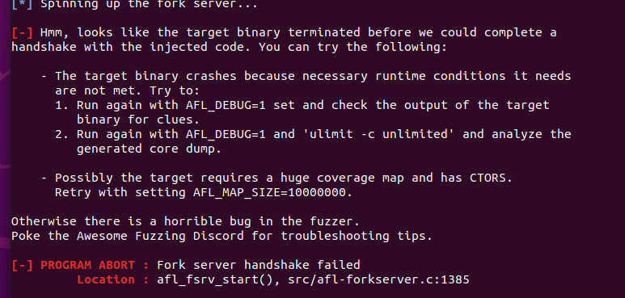

CVE-2016-4994 ：一个可通过特制的XCF文件触发的“释放后使用”漏洞。
本实验的实验指导省略了很多步骤，且对一些操作没有解释说明，上网也很难直接找到相关操作的解释原因。本实验的进展受到了一定的阻碍。
下载与安装目标
创建新文件夹：
1 | cd $HOME |
下载需要依赖：
1 | sudo apt-get install build-essential libatk1.0-dev libfontconfig1-dev libcairo2-dev libgudev-1.0-0 libdbus-1-dev libdbus-glib-1-dev libexif-dev libxfixes-dev libgtk2.0-dev python2.7-dev libpango1.0-dev libglib2.0-dev zlib1g-dev intltool libbabl-dev |
下载并解压libgegl-0.2：
1 | wget https://download.gimp.org/pub/gegl/0.2/gegl-0.2.0.tar.bz2 |
更改两处：
1 | sed -i 's/CODEC_CAP_TRUNCATED/AV_CODEC_CAP_TRUNCATED/g' ./operations/external/ff-load.c |
这里为什么要做此修改，指导中没有说明。
构建并安装libgegl-0.2：
1 | ./configure --enable-debug --disable-glibtest --without-vala --without-cairo --without-pango --without-pangocairo --without-gdk-pixbuf --without-lensfun --without-libjpeg --without-libpng --without-librsvg --without-openexr --without-sdl --without-libopenraw --without-jasper --without-graphviz --without-lua --without-libavformat --without-libv4l --without-libspiro --without-exiv2 --without-umfpack |
下载并解压GIMP-2.8.16：
1 | cd .. |
用afl-clang-lto作为编译器，编译构建GIMP：
1 | CC=afl-clang-lto CXX=afl-clang-lto++ PKG_CONFIG_PATH=$PKG_CONFIG_PATH:$HOME/Fuzzing_gimp/gegl-0.2.0/ CFLAGS="-fsanitize=address" CXXFLAGS="-fsanitize=address" LDFLAGS="-fsanitize=address" ./configure --disable-gtktest --disable-glibtest --disable-alsatest --disable-nls --without-libtiff --without-libjpeg --without-bzip2 --without-gs --without-libpng --without-libmng --without-libexif --without-aa --without-libxpm --without-webkit --without-librsvg --without-print --without-poppler --without-cairo-pdf --without-gvfs --without-libcurl --without-wmf --without-libjasper --without-alsa --without-gudev --disable-python --enable-gimp-console --without-mac-twain --without-script-fu --without-gudev --without-dbus --disable-mp --without-linux-input --without-xvfb-run --with-gif-compression=none --without-xmc --with-shm=none --enable-debug --prefix="$HOME/Fuzzing_gimp/gimp-2.8.16/install" |
命令中禁用了许多测试以及许多库，具体原因没有说明，可能是为了减短编译时间。
模糊测试
持久模式：
在持久模式下，AFL在执行测试用例后不会立即终止进程，而是保持进程的活动状态，等待下一个输入测试用例。这样，AFL可以避免为每个测试用例启动新的进程，从而节省了一些开销，并提高了Fuzzer的效率。
为了启用持久模式，对GIMP的xcf.c源码做如下修改:


语料库：
使用实验指导中给出的SampleInput.xcf作为语料库。
首先删除一些不需要的插件来节省启动时间：
1 | rm ./install/lib/gimp/2.0/plug-ins/* |
模糊测试：
1 | ASAN_OPTIONS=detect_leaks=0,abort_on_error=1,symbolize=0 afl-fuzz -i './afl_in' -o './afl_out' -D -t 100 -- ./install/bin/gimp-console-2.8 --verbose -d -f @@ |
首先是出现如下错误：

经分析是测试目标gimp没有找到gegl库。
使用export LD_LIBRARY_PATH=/usr/local/lib:$LD_LIBRARY_PATH命令，将/usr/local/lib目录添加到库搜索路径中。
然后又出现了如下问题：显示测试用例超时，我试过了调大-t后面的值，以及更换了语料库，用自己生成的.xcf文件进行尝试，依旧出现超时问题，目前仍未解决。